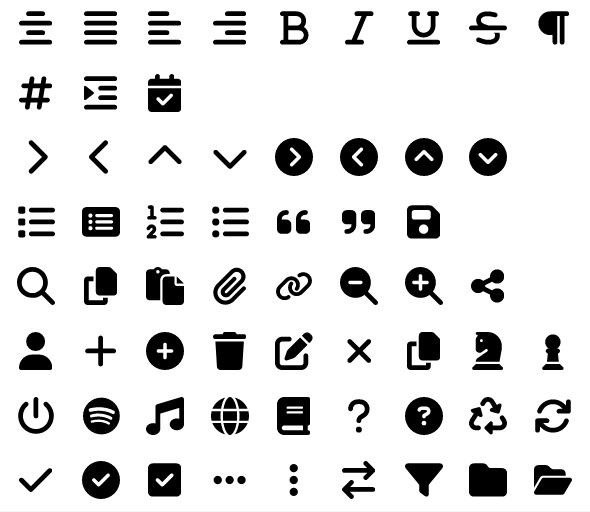

Installing packages
-
Install following packagse from nuget.
Projektanker.Icons.Avalonia Projektanker.Icons.Avalonia.FontAwesome Projektanker.Icons.Avalonia.MaterialDesign -
Add the package Depedency in Program.cs as follows
using Avalonia; using Projektanker.Icons.Avalonia.FontAwesome; using Projektanker.Icons.Avalonia.MaterialDesign; using Projektanker.Icons.Avalonia; using System; namespace UI { internal class Program { [STAThread] public static void Main(string[] args) => BuildAvaloniaApp() .StartWithClassicDesktopLifetime(args); public static AppBuilder BuildAvaloniaApp() { IconProvider.Current .Register<FontAwesomeIconProvider>() .Register<MaterialDesignIconProvider>(); return AppBuilder.Configure<App>() .UsePlatformDetect() .WithInterFont() .LogToTrace(); } } } -
In Window markup, add the xmlns path to icon package as follows.
<Window xmlns="https://github.com/avaloniaui" xmlns:x="http://schemas.microsoft.com/winfx/2006/xaml" xmlns:d="http://schemas.microsoft.com/expression/blend/2008" xmlns:mc="http://schemas.openxmlformats.org/markup-compatibility/2006" xmlns:vm="using:UI.ViewModels" xmlns:i="https://github.com/projektanker/icons.avalonia" mc:Ignorable="d" d:DesignWidth="800" d:DesignHeight="450" x:Class="UI.MainWindow" x:DataType="vm:MainWindowViewModel" Title="User Interface" Icon="/Assets/Icons/home72.ico" WindowState="Maximized" > <Design.DataContext> <vm:MainWindowViewModel></vm:MainWindowViewModel> </Design.DataContext> <Window.Styles> <Style Selector="Grid#OverlayGrid"> <Setter Property="ZIndex" Value="-1" /> <Setter Property="Background" Value="Black" /> <Setter Property="Opacity" Value="0.2" /> </Style> </Window.Styles> <StackPanel Margin="20" Spacing="10"> <i:Icon Value="fa-brands fa-github" FontSize="50" Foreground="Aquamarine" /> <TextBlock Text="{Binding MyName}"></TextBlock> <Button Command="{Binding ShowBuyCommand}">Buy</Button> <Button i:Attached.Icon="fa-brands fa-github" /> <i:Icon Value="fa-spinner" Animation="Pulse" /> <i:Icon Value="fa-sync" Animation="Spin" /> <Button> <StackPanel Orientation="Horizontal" Spacing="5"> <i:Icon Value="fa-play"></i:Icon> <TextBlock Text="Button with icon"></TextBlock> </StackPanel> </Button> </StackPanel> </Window> -
Another example,
<Window xmlns="https://github.com/avaloniaui" xmlns:x="http://schemas.microsoft.com/winfx/2006/xaml" xmlns:d="http://schemas.microsoft.com/expression/blend/2008" xmlns:mc="http://schemas.openxmlformats.org/markup-compatibility/2006" xmlns:i="https://github.com/projektanker/icons.avalonia" mc:Ignorable="d" x:Class="Demo.MainWindow" SizeToContent="WidthAndHeight" Title="Demo"> <Window.Styles> <Style Selector="TextBlock"> <Setter Property="VerticalAlignment" Value="Center" /> <Setter Property="Grid.Column" Value="0" /> <Setter Property="Margin" Value="5" /> </Style> <Style Selector="TextBlock.h1"> <Setter Property="FontSize" Value="16" /> </Style> <Style Selector="Grid > i|Icon"> <Setter Property="FontSize" Value="24" /> <Setter Property="Grid.Column" Value="1" /> <Setter Property="Margin" Value="5" /> </Style> <Style Selector="StackPanel > i|Icon"> <Setter Property="FontSize" Value="24" /> <Setter Property="Margin" Value="5" /> </Style> <Style Selector="Button"> <Setter Property="FontSize" Value="24" /> <Setter Property="Grid.Column" Value="2" /> <Setter Property="Margin" Value="5" /> </Style> <Style Selector="Button.disableByStyle"> <Setter Property="IsEnabled" Value="{Binding IsEnabled}" /> </Style> </Window.Styles> <DockPanel> <Menu DockPanel.Dock="Top"> <MenuItem Header="File"> <MenuItem Header="About" i:MenuItem.Icon="fa-solid fa-circle-info" /> </MenuItem> </Menu> <Grid RowDefinitions="Auto,Auto" ColumnDefinitions="Auto,Auto, Auto" Margin="4"> <!--Font Awesome--> <Grid RowDefinitions="Auto, Auto, Auto, Auto, Auto" ColumnDefinitions="Auto, Auto, Auto" Margin="4"> <TextBlock Text="FontAwesome" Grid.Row="0" Grid.ColumnSpan="2" Classes="h1" /> <!--GitHub--> <TextBlock Text="fa-brands fa-github" Grid.Row="1" /> <i:Icon Value="fa-brands fa-github" Grid.Row="1" Foreground="BlueViolet" /> <Button i:Attached.Icon="fa-brands fa-github" Grid.Row="1" Foreground="BlueViolet" Classes="disableByStyle" /> <!--Address Card--> <TextBlock Text="fa-solid fa-address-card" Grid.Row="2" /> <i:Icon Value="fa-solid fa-address-card" Grid.Row="2" /> <Button i:Attached.Icon="fa-solid fa-address-card" Grid.Row="2" Classes="disableByStyle" /> <TextBlock Text="fa-regular fa-address-card" Grid.Row="3" /> <i:Icon Value="fa-regular fa-address-card" Grid.Row="3" /> <Button i:Attached.Icon="fa-regular fa-address-card" Grid.Row="3" Classes="disableByStyle" /> <TextBlock Text="fa-solid fa(-circle)-info" Grid.Row="4" /> <i:Icon Value="fa-solid fa-info" Grid.Row="4" Foreground="DodgerBlue" /> <Button i:Attached.Icon="fa-solid fa-circle-info" Grid.Row="4" Foreground="DodgerBlue" Classes="disableByStyle" /> </Grid> <!--Material Design--> <Grid Grid.Column="1" RowDefinitions="Auto, Auto, Auto, Auto, Auto" ColumnDefinitions="Auto, Auto, Auto" Margin="32,4,4,4"> <TextBlock Text="Material Design" Grid.Row="0" Grid.ColumnSpan="2" Classes="h1" /> <!--GitHub--> <TextBlock Text="mdi-github" Grid.Row="1" /> <i:Icon Value="mdi-github" Grid.Row="1" Foreground="BlueViolet" /> <Button i:Attached.Icon="mdi-github" Grid.Row="1" Foreground="BlueViolet" IsEnabled="{Binding IsEnabled}" /> <!--circle-medium--> <TextBlock Text="mdi-circle-medium" Grid.Row="2" /> <i:Icon Value="mdi-circle-medium" Grid.Row="2" /> <Button i:Attached.Icon="mdi-circle-medium" Grid.Row="2" IsEnabled="{Binding IsEnabled}" /> <TextBlock Text="mdi-map-marker-outline" Grid.Row="3" /> <i:Icon Value="mdi-map-marker-outline" Grid.Row="3" /> <Button i:Attached.Icon="mdi-map-marker-outline" Grid.Row="3" IsEnabled="{Binding IsEnabled}" /> <TextBlock Text="mdi-information(-variant)" Grid.Row="4" /> <i:Icon Value="mdi-information-variant" Grid.Row="4" Foreground="DodgerBlue" /> <Button i:Attached.Icon="mdi-information" Grid.Row="4" Foreground="DodgerBlue" IsEnabled="{Binding IsEnabled}" /> </Grid> <!--Animations--> <Grid Grid.Column="2" RowDefinitions="Auto, Auto, Auto, Auto, Auto" ColumnDefinitions="Auto, Auto, Auto" Margin="32,4,4,4"> <TextBlock Text="Animations" Grid.Row="0" Grid.ColumnSpan="2" Classes="h1" /> <TextBlock Text="fa-spinner (Pulse)" Grid.Row="1" /> <i:Icon Value="fa-spinner" Animation="Pulse" Grid.Row="1" /> <Button Grid.Row="1" Classes="disableByStyle"> <i:Icon Value="fa-spinner" Animation="Pulse" /> </Button> <TextBlock Text="fa-sync (Spin)" Grid.Row="2" /> <i:Icon Value="fa-sync" Animation="Spin" Grid.Row="2" /> <Button Grid.Row="2" Classes="disableByStyle"> <i:Icon Value="fa-sync" Animation="Spin" /> </Button> <TextBlock Text="mdi-cog (Spin)" Grid.Row="3" /> <i:Icon Value="mdi-cog" Animation="Spin" Grid.Row="3" /> <Button Grid.Row="3" IsEnabled="{Binding IsEnabled}"> <i:Icon Value="fa-cog" Animation="Spin" /> </Button> <TextBlock Text="mdi-progress-helper (Pulse)" Grid.Row="4" /> <i:Icon Value="mdi-progress-helper" Animation="Pulse" Grid.Row="4" /> <Button Grid.Row="4" IsEnabled="{Binding IsEnabled}"> <i:Icon Value="mdi-progress-helper" Animation="Pulse" /> </Button> </Grid> <!--Actions--> <DockPanel Margin="4" Grid.Row="1"> <ToggleSwitch Name="ButtonToggle" OffContent="Buttons disabled" OnContent="Buttons enabled" IsChecked="{Binding IsEnabled}" /> </DockPanel> </Grid> </DockPanel> </Window> -

<ResourceDictionary xmlns="https://github.com/avaloniaui" xmlns:x="http://schemas.microsoft.com/winfx/2006/xaml" xmlns:i="https://github.com/projektanker/icons.avalonia" xmlns:sys="clr-namespace:System;assembly=System.Runtime" > <Design.PreviewWith> <Border Padding="10"> <StackPanel Orientation="Vertical" Spacing="10"> <StackPanel Orientation="Horizontal" Spacing="10"> <i:Icon Value="{StaticResource faAlignCenter}"></i:Icon> <i:Icon Value="{StaticResource faAlignJustify}"></i:Icon> <i:Icon Value="{StaticResource faAlignLeft}"></i:Icon> <i:Icon Value="{StaticResource faAlignRight}"></i:Icon> <i:Icon Value="{StaticResource faBold}"></i:Icon> <i:Icon Value="{StaticResource faItalic}"></i:Icon> <i:Icon Value="{StaticResource faUnderline}"></i:Icon> <i:Icon Value="{StaticResource faStrikethrough}"></i:Icon> <i:Icon Value="{StaticResource faParagraph}"></i:Icon> </StackPanel> <StackPanel Orientation="Horizontal" Spacing="10"> <i:Icon Value="{StaticResource faHashtag}"></i:Icon> <i:Icon Value="{StaticResource faIndent}"></i:Icon> <i:Icon Value="fa-calendar-check"></i:Icon> </StackPanel> <StackPanel Orientation="Horizontal" Spacing="10"> <i:Icon Value="{StaticResource faChevronRight}"></i:Icon> <i:Icon Value="{StaticResource faChevronLeft}"></i:Icon> <i:Icon Value="{StaticResource faChevronUp}"></i:Icon> <i:Icon Value="{StaticResource faChevronDown}"></i:Icon> <i:Icon Value="{StaticResource faChevronCircleRight}"></i:Icon> <i:Icon Value="{StaticResource faChevronCircleLeft}"></i:Icon> <i:Icon Value="{StaticResource faChevronCircleUp}"></i:Icon> <i:Icon Value="{StaticResource faChevronCircleDown}"></i:Icon> </StackPanel> <StackPanel Orientation="Horizontal" Spacing="10"> <i:Icon Value="{StaticResource faList}"></i:Icon> <i:Icon Value="{StaticResource faListAlt}"></i:Icon> <i:Icon Value="{StaticResource faListOl}"></i:Icon> <i:Icon Value="{StaticResource faListUl}"></i:Icon> <i:Icon Value="{StaticResource faQuoteLeft}"></i:Icon> <i:Icon Value="{StaticResource faQuoteRight}"></i:Icon> <i:Icon Value="{StaticResource faSave}"></i:Icon> </StackPanel> <StackPanel Orientation="Horizontal" Spacing="10"> <i:Icon Value="{StaticResource faSearch}"></i:Icon> <i:Icon Value="{StaticResource faCopy}"></i:Icon> <i:Icon Value="{StaticResource faPaste}"></i:Icon> <i:Icon Value="{StaticResource faPaperclip}"></i:Icon> <i:Icon Value="{StaticResource faLink}"></i:Icon> <i:Icon Value="{StaticResource faSearchMinus}"></i:Icon> <i:Icon Value="{StaticResource faSearchPlus}"></i:Icon> <i:Icon Value="{StaticResource faShareAlt}"></i:Icon> </StackPanel> <StackPanel Orientation="Horizontal" Spacing="10"> <i:Icon Value="{StaticResource faUser}"></i:Icon> <i:Icon Value="{StaticResource faAdd}"></i:Icon> <i:Icon Value="{StaticResource faAddCircle}"></i:Icon> <i:Icon Value="{StaticResource faDelete}"></i:Icon> <i:Icon Value="{StaticResource faEdit}"></i:Icon> <i:Icon Value="{StaticResource faClose}"></i:Icon> <i:Icon Value="{StaticResource faCopy}"></i:Icon> <i:Icon Value="{StaticResource faKnight}"></i:Icon> <i:Icon Value="{StaticResource faPawn}"></i:Icon> </StackPanel> <StackPanel Orientation="Horizontal" Spacing="10"> <i:Icon Value="{StaticResource faPowerOff}"></i:Icon> <i:Icon Value="{StaticResource faSpotify}"></i:Icon> <i:Icon Value="{StaticResource faMusic}"></i:Icon> <i:Icon Value="{StaticResource faGlobe}"></i:Icon> <i:Icon Value="{StaticResource faBook}"></i:Icon> <i:Icon Value="{StaticResource faQuestion}"></i:Icon> <i:Icon Value="{StaticResource faQuestionCircle}"></i:Icon> <i:Icon Value="{StaticResource faRecycle}"></i:Icon> <i:Icon Value="{StaticResource faSync}"></i:Icon> </StackPanel> <StackPanel Orientation="Horizontal" Spacing="10"> <i:Icon Value="{StaticResource faCheck}"></i:Icon> <i:Icon Value="{StaticResource faCheckCircle}"></i:Icon> <i:Icon Value="{StaticResource faCheckSquare}"></i:Icon> <i:Icon Value="{StaticResource faEllipsisH}"></i:Icon> <i:Icon Value="{StaticResource faEllipsisV}"></i:Icon> <i:Icon Value="{StaticResource faExchange}"></i:Icon> <i:Icon Value="{StaticResource faFilter}"></i:Icon> <i:Icon Value="{StaticResource faFolder}"></i:Icon> <i:Icon Value="{StaticResource faFolderOpen}"></i:Icon> </StackPanel> </StackPanel> </Border> </Design.PreviewWith> <sys:String x:Key="faUser">fa-user</sys:String> <sys:String x:Key="faAdd">fa-plus</sys:String> <sys:String x:Key="faAddCircle">fa-plus-circle</sys:String> <sys:String x:Key="faDelete">fa-trash</sys:String> <sys:String x:Key="faEdit">fa-edit</sys:String> <sys:String x:Key="faClose">fa-times</sys:String> <sys:String x:Key="faCopy">fa-copy</sys:String> <sys:String x:Key="faKnight">fa-chess-knight</sys:String> <sys:String x:Key="faPawn">fa-chess-pawn</sys:String> <sys:String x:Key="faSpotify">fa-spotify</sys:String> <sys:String x:Key="faMusic">fa-music</sys:String> <sys:String x:Key="faGlobe">fa-globe</sys:String> <sys:String x:Key="faBook">fa-book</sys:String> <sys:String x:Key="faPowerOff">fa-power-off</sys:String> <sys:String x:Key="faQuestion">fa-question</sys:String> <sys:String x:Key="faQuestionCircle">fa-question-circle</sys:String> <sys:String x:Key="faRecycle">fa-recycle</sys:String> <sys:String x:Key="faSync">fa-sync</sys:String> <sys:String x:Key="faCheck">fa-check</sys:String> <sys:String x:Key="faCheckCircle">fa-check-circle</sys:String> <sys:String x:Key="faCheckSquare">fa-check-square</sys:String> <sys:String x:Key="faEllipsisH">fa-ellipsis-h</sys:String> <sys:String x:Key="faEllipsisV">fa-ellipsis-v</sys:String> <sys:String x:Key="faExchange">fa-exchange</sys:String> <sys:String x:Key="faFilter">fa-filter</sys:String> <sys:String x:Key="faFolder">fa-folder</sys:String> <sys:String x:Key="faFolderOpen">fa-folder-open</sys:String> <sys:String x:Key="faAlignCenter">fa-align-center</sys:String> <sys:String x:Key="faAlignJustify">fa-align-justify</sys:String> <sys:String x:Key="faAlignLeft">fa-align-left</sys:String> <sys:String x:Key="faAlignRight">fa-align-right</sys:String> <sys:String x:Key="faBold">fa-bold</sys:String> <sys:String x:Key="faItalic">fa-italic</sys:String> <sys:String x:Key="faUnderline">fa-underline</sys:String> <sys:String x:Key="faStrikethrough">fa-strikethrough</sys:String> <sys:String x:Key="faParagraph">fa-paragraph</sys:String> <sys:String x:Key="faList">fa-list</sys:String> <sys:String x:Key="faListAlt">fa-list-alt</sys:String> <sys:String x:Key="faListOl">fa-list-ol</sys:String> <sys:String x:Key="faListUl">fa-list-ul</sys:String> <sys:String x:Key="faQuoteLeft">fa-quote-left</sys:String> <sys:String x:Key="faQuoteRight">fa-quote-right</sys:String> <sys:String x:Key="faSave">fa-save</sys:String> <sys:String x:Key="faHashtag">fa-hashtag</sys:String> <sys:String x:Key="faIndent">fa-indent</sys:String> <sys:String x:Key="faSearch">fa-search</sys:String> <sys:String x:Key="faSearchMinus">fa-search-minus</sys:String> <sys:String x:Key="faSearchPlus">fa-search-plus</sys:String> <sys:String x:Key="faPaste">fa-paste</sys:String> <sys:String x:Key="faPaperclip">fa-paperclip</sys:String> <sys:String x:Key="faLink">fa-link</sys:String> <sys:String x:Key="faShareAlt">fa-share-alt</sys:String> <sys:String x:Key="faChevronRight">fa-chevron-right</sys:String> <sys:String x:Key="faChevronLeft">fa-chevron-left</sys:String> <sys:String x:Key="faChevronUp">fa-chevron-up</sys:String> <sys:String x:Key="faChevronDown">fa-chevron-down</sys:String> <sys:String x:Key="faChevronCircleRight">fa-chevron-circle-right</sys:String> <sys:String x:Key="faChevronCircleLeft">fa-chevron-circle-left</sys:String> <sys:String x:Key="faChevronCircleUp">fa-chevron-circle-up</sys:String> <sys:String x:Key="faChevronCircleDown">fa-chevron-circle-down</sys:String> </ResourceDictionary>